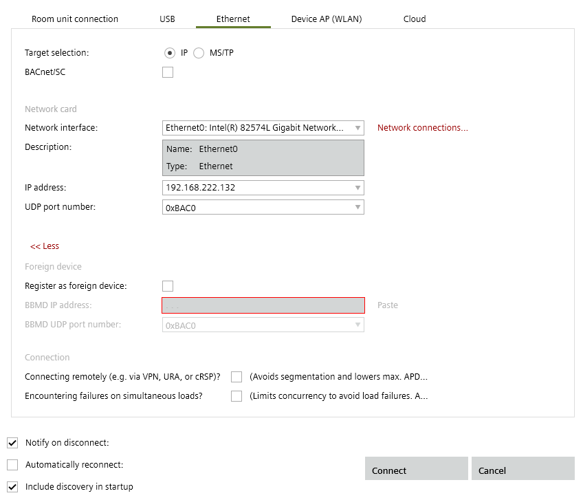
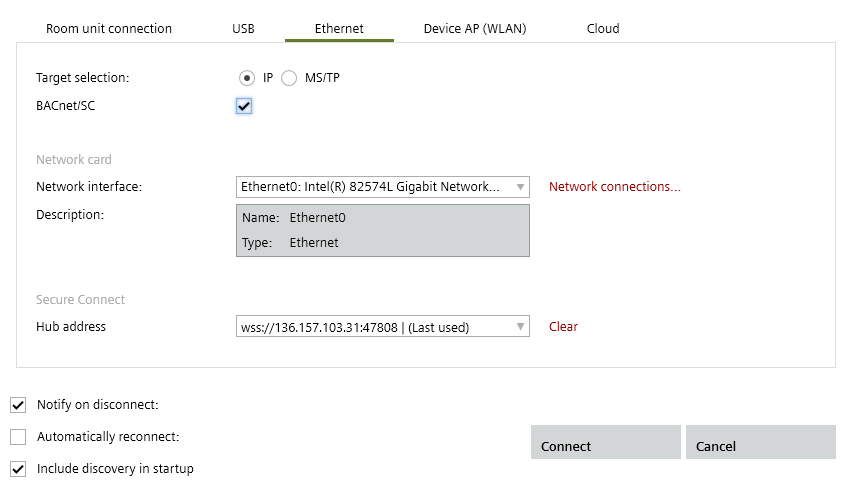
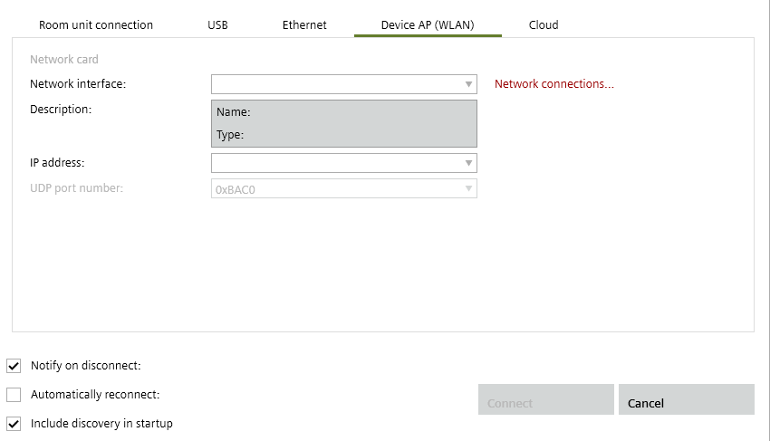

通过以太网/IP 网络连接
您可以通过 IP、MS/TP 或 WLAN 连接。 WLAN 连接是与设备的直接连接。
LAN 电缆以两种方式将调试笔记本电脑与以太网/IP 网络连接起来：
- The LAN cable is plugged directly into the device.
- The LAN cable is plugged into another location (for example, router, switch, etc.) on the IP network.

如果设备的 24 V 电源中断，设备的开关功能会自动停止，并且 IP 与通信链中其他设备的通信也会中断。
Connect over an Ethernet/IP network
- The network interface card on the laptop is configured.
Configuring a network connection - A category 5e (cat 5e) Ethernet cable with RJ45 connectors is available if connecting via an ethernet connection.
- If available, plug the LAN cable into the commissioning laptop and into the device or to an Ethernet/IP router that is connected to the device.
- In the Common toolbar, select the arrow beside the Connect
 button.
button.
Connect and disconnect - Select the Ethernet tab.
- Select the device type IP, MS/TP or Device AP (WLAN).
BACnet/SC cleared:
BACnet/SC enabled:
Device AP (WLAN) selected:
- Configure the connection.
- Click Connect.
- The connection to the device is established.
- Select Startup > Configure and download.
The device can now be discovered.